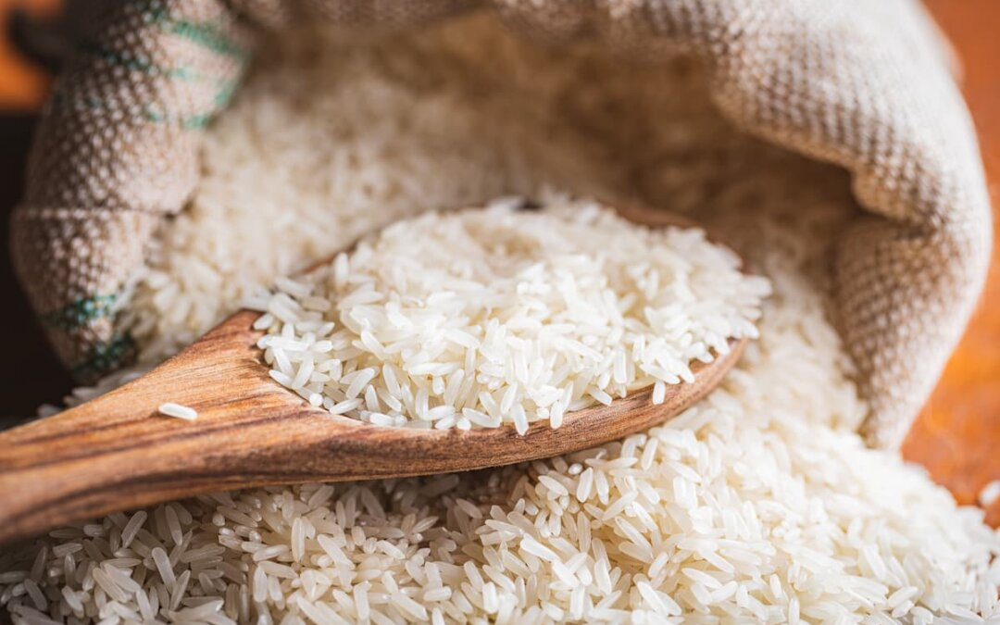
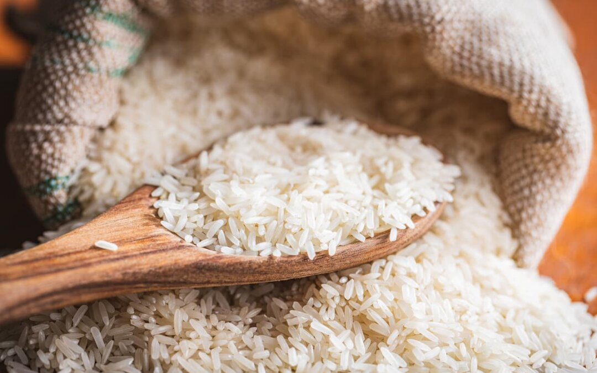

Propietario
Ing. Juan Mohammed Ali Villa
Soy el ingeniero agrícola a cargo de esta organización.
Por 137 años, este pequeño imperio agricultor que ha
pasado de generación en generación me enorgullece
presentarme oficialmente como el propietario. Planeo
continuar con los sueños de mis antepasados y avanzar
en proveer granos a las familias costarricenses.